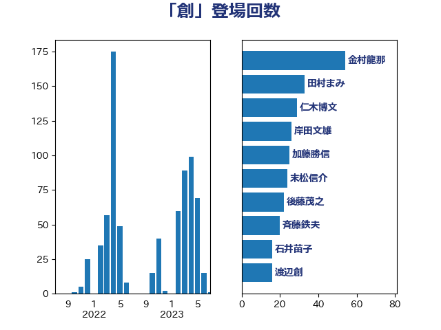

単語「創」

| 金村龍那 | 日本維新の会 | 54 回 |
| 田村まみ | 国民民主党 | 33 回 |
| 仁木博文 | 無所属 | 29 回 |
| 岸田文雄 | 自由民主党 | 26 回 |
| 加藤勝信 | 自由民主党 | 25 回 |
| 末松信介 | 自由民主党 | 24 回 |
| 後藤茂之 | 自由民主党 | 22 回 |
| 斉藤鉄夫 | 公明党 | 20 回 |
| 石井苗子 | 日本維新の会 | 16 回 |
| 渡辺創 | 立憲民主党 | 16 回 |
| 小林鷹之 | 自由民主党 | 15 回 |
| 西銘恒三郎 | 自由民主党 | 14 回 |
| 矢倉克夫 | 公明党 | 12 回 |
| 根本匠 | 自由民主党 | 12 回 |
| 伊佐進一 | 公明党 | 12 回 |
| 三浦信祐 | 公明党 | 12 回 |
| 西村康稔 | 自由民主党 | 10 回 |
| 細田博之 | 自由民主党 | 10 回 |
| 武見敬三 | 自由民主党 | 10 回 |
| 中島克仁 | 立憲民主党 | 10 回 |
| 泉田裕彦 | 自由民主党 | 9 回 |
| 鈴木英敬 | 自由民主党 | 8 回 |
| 林芳正 | 自由民主党 | 8 回 |
| 吉田統彦 | 立憲民主党 | 8 回 |
| 亀岡偉民 | 自由民主党 | 8 回 |
| 一谷勇一郎 | 日本維新の会 | 8 回 |
| 池下卓 | 日本維新の会 | 7 回 |
| 横山信一 | 公明党 | 7 回 |
| 吉井章 | 自由民主党 | 7 回 |
| 豊田俊郎 | 自由民主党 | 6 回 |
| 河野太郎 | 自由民主党 | 6 回 |
| 永岡桂子 | 自由民主党 | 5 回 |
| 根本幸典 | 自由民主党 | 5 回 |
| 平口洋 | 自由民主党 | 5 回 |
| 上野通子 | 自由民主党 | 5 回 |
| 高市早苗 | 自由民主党 | 4 回 |
| 田島麻衣子 | 立憲民主党 | 4 回 |
| 本田顕子 | 自由民主党 | 4 回 |
| 高橋光男 | 公明党 | 3 回 |
| 阿部司 | 日本維新の会 | 3 回 |
| 長谷川淳二 | 自由民主党 | 3 回 |
| 金子道仁 | 日本維新の会 | 3 回 |
| 野間健 | 立憲民主党 | 3 回 |
| 笹川博義 | 自由民主党 | 3 回 |
| 秋葉賢也 | 自由民主党 | 3 回 |
| 田畑裕明 | 自由民主党 | 3 回 |
| 牧島かれん | 自由民主党 | 3 回 |
| 渡辺博道 | 自由民主党 | 3 回 |
| 江藤拓 | 自由民主党 | 3 回 |
| 柳本顕 | 自由民主党 | 3 回 |
| 有村治子 | 自由民主党 | 3 回 |
| 広瀬めぐみ | 自由民主党 | 3 回 |
| 川田龍平 | 立憲民主党 | 3 回 |
| 嘉田由紀子 | 無所属 | 3 回 |
| 佐藤英道 | 公明党 | 3 回 |
| 丸川珠代 | 自由民主党 | 3 回 |
| 上野賢一郎 | 自由民主党 | 3 回 |
| 青木愛 | 立憲民主党 | 2 回 |
| 青山周平 | 自由民主党 | 2 回 |
| 野上浩太郎 | 自由民主党 | 2 回 |
| 緒方林太郎 | 無所属 | 2 回 |
| 簗和生 | 自由民主党 | 2 回 |
| 福岡資麿 | 自由民主党 | 2 回 |
| 神谷政幸 | 自由民主党 | 2 回 |
| 浜口誠 | 国民民主党 | 2 回 |
| 沢田良 | 日本維新の会 | 2 回 |
| 池田佳隆 | 自由民主党 | 2 回 |
| 柴田巧 | 日本維新の会 | 2 回 |
| 島村大 | 自由民主党 | 2 回 |
| 山際大志郎 | 自由民主党 | 2 回 |
| 山田美樹 | 自由民主党 | 2 回 |
| 中川郁子 | 自由民主党 | 2 回 |
| 鬼木誠 | 立憲民主党 | 1 回 |
| 高橋千鶴子 | 日本共産党 | 1 回 |
| 高橋はるみ | 自由民主党 | 1 回 |
| 高木真理 | 立憲民主党 | 1 回 |
| 馬場伸幸 | 日本維新の会 | 1 回 |
| 青島健太 | 日本維新の会 | 1 回 |
| 長友慎治 | 国民民主党 | 1 回 |
| 鈴木俊一 | 自由民主党 | 1 回 |
| 金子恵美 | 立憲民主党 | 1 回 |
| 赤澤亮正 | 自由民主党 | 1 回 |
| 萩生田光一 | 自由民主党 | 1 回 |
| 菅家一郎 | 自由民主党 | 1 回 |
| 芳賀道也 | 国民民主党 | 1 回 |
| 秋野公造 | 公明党 | 1 回 |
| 石原宏高 | 自由民主党 | 1 回 |
| 熊谷裕人 | 立憲民主党 | 1 回 |
| 漆間譲司 | 日本維新の会 | 1 回 |
| 海江田万里 | 立憲民主党 | 1 回 |
| 浮島智子 | 公明党 | 1 回 |
| 梶原大介 | 自由民主党 | 1 回 |
| 松野博一 | 自由民主党 | 1 回 |
| 杉尾秀哉 | 立憲民主党 | 1 回 |
| 末次精一 | 立憲民主党 | 1 回 |
| 木原誠二 | 自由民主党 | 1 回 |
| 早坂敦 | 日本維新の会 | 1 回 |
| 市村浩一郎 | 日本維新の会 | 1 回 |
| 岩田和親 | 自由民主党 | 1 回 |
| 山谷えり子 | 自由民主党 | 1 回 |
| 山東昭子 | 自由民主党 | 1 回 |
| 山本佐知子 | 自由民主党 | 1 回 |
| 山口俊一 | 自由民主党 | 1 回 |
| 尾身朝子 | 自由民主党 | 1 回 |
| 寺田静 | 無所属 | 1 回 |
| 塩崎彰久 | 自由民主党 | 1 回 |
| 城井崇 | 立憲民主党 | 1 回 |
| 国光あやの | 自由民主党 | 1 回 |
| 吉田とも代 | 日本維新の会 | 1 回 |
| 古川康 | 自由民主党 | 1 回 |
| 勝目康 | 自由民主党 | 1 回 |
| 八木哲也 | 自由民主党 | 1 回 |
| 伴野豊 | 立憲民主党 | 1 回 |
| 伊東信久 | 日本維新の会 | 1 回 |
| 仁比聡平 | 日本共産党 | 1 回 |
| 井坂信彦 | 立憲民主党 | 1 回 |
| 中野英幸 | 自由民主党 | 1 回 |
| 中谷真一 | 自由民主党 | 1 回 |
| 中川宏昌 | 公明党 | 1 回 |
| 三原じゅん子 | 自由民主党 | 1 回 |
| たがや亮 | れいわ新選組 | 1 回 |
| こやり隆史 | 自由民主党 | 1 回 |